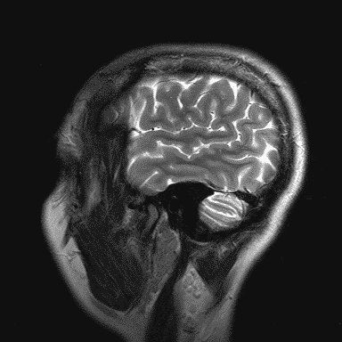

Hello! My name is Miguel Cruz! This site represents work that I have done in support of my efforts to learn to program in the CSC 366 course at SUNY Oswego during the Fall 2020 semester. The materials will be temporally organized for the most part. Links to external sites that pertain to computer programming, problem solving, Prolog, and related matters will be placed after the personally created artifacts.
